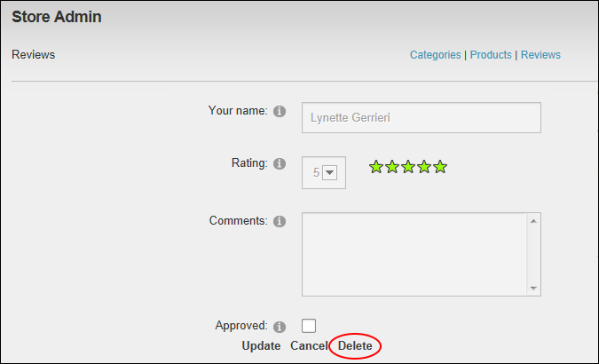

Deleting Product Reviews
Catalog Managers can permanently delete product reviews from the store using the Store Admin module.
- On the Store Admin module, click the Reviews link.
- Filter reviews by Status, Category and/or Product as required. See "Filtering Product Reviews"
- Click the Edit link beside the required review.
- Click the Delete link. This displays the message "Are You Sure You Wish To Delete This Item?"

-
Click the OK button confirm.
- Repeat Steps 2-5 to delete additional reviews.